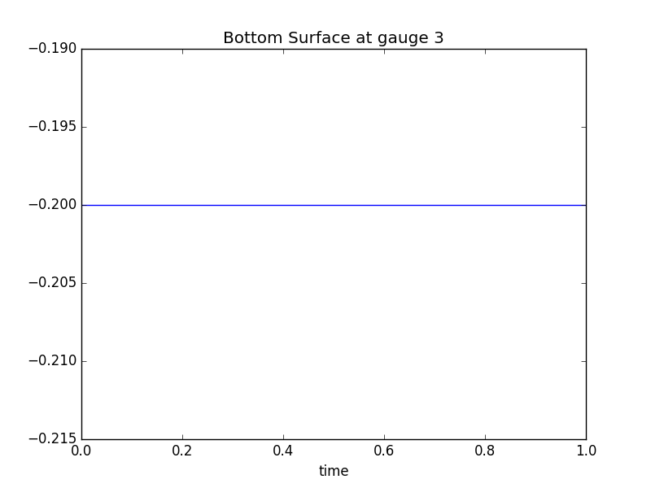

< < < Index > > >

Image source: /Users/rjl/git/clawpack/geoclaw/examples/multi-layer/plane_wave/_plots/gauge0003fig1001.png
Other figures at this time: Surface & topo Bottom Surface Gauge All Figures
Other gauges: 0 1 2 3 4 All Gauges